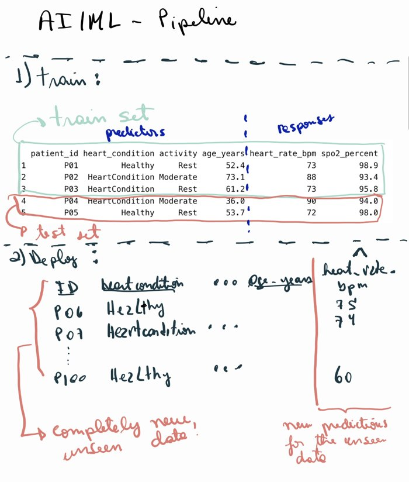

| name | site | age | sofa | lactate | map_min | baseline_creat | protocol_adherence | crp | albumin |
|---|---|---|---|---|---|---|---|---|---|
| Aoife Byrne | ICU_B | 71 | 6 | 2.1 | 66 | 1.0 | 0.72 | 95 | 2.7 |
| Tomás Ruiz | ICU_A | 54 | 3 | 1.2 | 78 | 0.9 | 0.85 | 45 | 3.4 |
| Priya Nair | ICU_D | 38 | 12 | 4.1 | 54 | 1.5 | 0.55 | 190 | 2.2 |
1 Data, models and decisions
Below are five things Emma and Seán have in front of them tonight. Label each one as data (a recorded fact), a model (a representation of how things are related), information (what a model tells us about this case) or a decision (a choice between actions). Take your best guess: the chapter explains each term.
| Item | Your label |
|---|---|
| "Aoife's lactate is 2.1 mmol/L." | |
| The records of 1 250 past ICU patients from four hospitals. | |
| "The rise in creatinine depends on illness severity, blood pressure and baseline kidney function, plus some unexplained variation." | |
| "Aoife's creatinine is expected to rise by about 0.3 mg/dL in the next 48 hours." | |
| Start the kidney-protective bundle tonight, or reassess in the morning. |
How to use this chapter
Starting here?
This is the first chapter, so it assumes nothing. If you came to the book for a later topic, two parts of this chapter are worth reading anyway, because every other chapter leans on them: the four running examples (Section 1.1) and the decision basis with its threshold (Section 1.5). Each later chapter recaps them briefly in its own Starting here? box.
This chapter builds the vocabulary of the whole book: data, models, decisions, and what we mean by artificial intelligence and machine learning. It has twelve sections and a Lab, eight quick checks, three “Try it” widgets, a challenge and three coding missions in R and Python. Allow about 90 minutes. You do not need to know any programming yet: the missions tell you exactly what to type.
Notation at a glance (for lookup only)
| Symbol | Meaning | Section |
|---|---|---|
| \(n\), \(p\) | number of instances (rows), number of features (columns) | Section 1.7 |
| \(\mathbf{x}_i\), \(y_i\) | features and outcome of instance \(i\) | Section 1.7 |
| \(f\) | the true, unknown relationship between features and outcome | Section 1.4 |
| \(\varepsilon\) | error: the part of the outcome the features do not explain | Section 1.4 |
| \(\hat f\), \(\hat y\) | a fitted model and its prediction (“hat” = estimated) | Section 1.4 |
| \(\mathcal{A}\) | the set of alternatives in a decision | Section 1.5 |
| \(\mathcal{K}\) | the state of knowledge of the decision-maker | Section 1.5 |
| \(p_{\text{AKI}}\) | probability that a patient develops acute kidney injury | Section 1.5 |
The full list is on the notation page.
1.1 Four running examples
Throughout the book we return to the same four situations. They come from different corners of health care, so that you see the same idea working in different places, and they grow with the book: the table you meet today becomes a prediction problem, then a risk with uncertainty, then a dataset with holes, a cloud of points in many dimensions, groups of patients, an explained model, a causal question, a stream of clinical text and, finally, a decision supported by a language model. All four datasets are simulated (they describe no real person) and can be downloaded, with the code that generated them, from the data appendix.
| Example 1 Ward 7 ICU | Example 2 ONCO-1 trial | Example 3 HomeBeat | Example 4 CellWorks | |
|---|---|---|---|---|
| Field | Hospital medicine, pharmacy | Oncology, ATT | Wearables, digital trials | Cell and gene therapy manufacturing |
| Units | 1 250 ICU patients, 4 hospitals | 1 000 randomised patients (of 10 000) | 500 remote participants | 420 production batches |
| What is measured | severity score, lactate, blood pressure, kidney and inflammation markers | treatment, dose, tumour grade, 50 genes (of 2 000) | heart rate, heart-rate variability, skin temperature, activity | culture days, temperature and pH deviations, viability, transduction |
| Outcome | change in creatinine over 48 h | tumour shrinkage (%) | stress score, deterioration event | potency score |
| Typical question | Who is at risk of acute kidney injury, and what should the team do tonight? | Does chemotherapy work, for whom, and which genes matter? | Can a smartwatch flag deterioration early? | Which process factors drive potency? Why did a batch fail? |
| Faces you will meet | Aoife, Tomás and Priya; Dr Emma Walsh; Seán, the pharmacist | patients #0042 and #0917 | Lena, whose watch stops sending data | batch CW-118, which failed its release test |
Example 1: Ward 7 ICU is our primary example. Acute kidney injury (AKI) is a sudden loss of kidney function that is common in critically ill patients; a rise in serum creatinine of at least 0.3 mg/dL within 48 hours is one of the internationally agreed criteria for it (Kidney Disease: Improving Global Outcomes (KDIGO) Acute Kidney Injury Work Group 2012). The dataset records, for 1 250 past patients, what was known on admission (age, the SOFA organ-failure score (Vincent et al. 1996), lactate, the lowest blood pressure, kidney and inflammation markers, how fully the care protocol was delivered) and what happened to their creatinine over the next 48 hours. Tonight three new patients are on the ward, and nobody knows yet what will happen to them:
Example 2: ONCO-1 is a randomised trial in which patients with solid tumours were allocated, by chance, to chemotherapy or no chemotherapy. Tumour size was measured before and after treatment, and the expression of 2 000 genes was recorded. Example 3: HomeBeat follows 500 people at home who wear a smartwatch as part of a decentralised trial (one run largely outside the clinic). Example 4: CellWorks records 420 production batches of a cell therapy; each batch must pass a potency test before it can be given to a patient.
Images are data too. When we reach neural networks (Chapter 7) a fifth source joins the four examples: paediatric chest X-rays labelled normal or pneumonia, taken from the public PneumoniaMNIST collection (Yang et al. 2023; Kermany et al. 2018). They are described in the data appendix.
In which running example was the assignment of the main exposure decided by the investigators rather than by circumstances?
1.2 Living in the data era
Definition 1.1 (Data) Data are recorded representations of facts, observations or measurements about objects, events or phenomena: numbers from a sensor, entries in a medical record, pixels in an image, words in a discharge letter, the sequence of bases in a strand of DNA. On their own they are symbols; they become information when interpreted in a context.
We live in an era of abundant data. Over recent decades the cost of computing and storage has fallen while the capacity to collect, transmit and analyse information has grown by orders of magnitude (Hilbert and López 2011). The life sciences are a striking case: genomics, transcriptomics, proteomics and metabolomics produce massive, high-resolution descriptions of biological systems (Stephens et al. 2015; Hasin, Seldin, and Lusis 2017). In health care, electronic health records (EHR), laboratory results, imaging, wearable sensors and omics profiles together give a multidimensional view of each patient (Jensen, Jensen, and Brunak 2012; Hripcsak and Albers 2013).
The challenge is no longer only to collect data but to integrate heterogeneous sources into coherent, trustworthy evidence for prediction, personalised treatment and clinical decision support (Raghupathi and Raghupathi 2014; Karczewski and Snyder 2018), while keeping care safe, fair and transparent (Topol 2019). On Ward 7, for instance, Aoife’s record already combines a severity score, a blood-gas analyser reading, a blood-pressure monitor and laboratory results, each produced by a different system.
1.3 Where data come from: observation and experiment
AI and machine-learning methods depend on the quality and nature of the data used to train them. Most health data come from one of two kinds of process.
Definition 1.2 (Observational and experimental data) Observational data are recorded as things happen, without the investigator intervening: health records, registries, wearable streams, imaging archives, manufacturing logs. Experimental data are generated when the investigator assigns treatments, conditions or exposures according to a design, from in-vitro experiments and animal studies to randomised controlled trials.
Observational data offer breadth and realism: they show how treatments perform in routine practice, across the full variety of patients, and over long periods, which is why they are essential for monitoring the safety of new therapies after approval (Sherman et al. 2016). Experimental data offer rigour: because the investigator controls who receives what (ideally by randomisation), they are the strongest basis for claims that a treatment causes an effect (Hernán and Robins 2020), and they form the backbone of regulatory assessments of new advanced therapies.
The two are complementary. A risk model may be developed from observational data and later tested in a trial; a trial may suggest which patients benefit, and observational data then show whether that holds in practice. In our examples, Ward 7, HomeBeat and CellWorks are observational; ONCO-1 is experimental. Keep this distinction in mind: in Section 1.10 we will see that it decides which questions a model can answer.
A hospital pharmacist extracts from the records all patients who received vancomycin last year, with their kidney function before and after. What kind of data is this?
1.4 Models: representations of reality
Look at Figure 1.1. On the left is a cylinder cut at a slant. Seen from different points of view it appears as an ellipse (from below), a triangle (from the side) or a rounded arch (from the front). Each of these flat shapes represents the same solid object, each keeps some of its features and loses others, and each rests on assumptions: for instance, that a three-dimensional object can be summarised by a two-dimensional shadow. Another word for representation is model.

Definition 1.3 (Model) A model is a simplified representation of a part of reality, built for a purpose, resting on assumptions. Several models can represent the same reality; they can be compared by how well they serve the purpose.
Models can be drawings, flowcharts or physical replicas. In this book they are mostly mathematical. Start with the smallest dataset we can imagine (Table 1.3): five people for whom we recorded whether they have a heart condition, their level of activity and their age, together with their heart rate and their blood oxygen saturation (SpO2). This table is factual evidence about a small piece of reality, the equivalent of the cut cylinder in Figure 1.1.
| Person | Condition | Activity | Age | HR (bpm) | SpO2 (%) |
|---|---|---|---|---|---|
| P01 | Healthy | Rest | 52.4 | 73 | 98.9 |
| P02 | HeartCondition | Moderate | 73.1 | 88 | 93.4 |
| P03 | HeartCondition | Rest | 61.2 | 73 | 95.8 |
| P04 | HeartCondition | Moderate | 36.0 | 90 | 94.0 |
| P05 | Healthy | Rest | 53.7 | 72 | 98.0 |
From this one reality we could build many representations, depending on our goal. Suppose we want to explain heart rate and SpO2 using the rest of the information. We can write
\[ (\text{heart rate},\ \text{SpO}_2) = f(\text{condition},\ \text{activity},\ \text{age}) , \qquad(1.1)\]
which says that the two outcomes are some function \(f\) of condition, activity and age. As it stands, Equation 1.1 is a mathematical function: it assumes there is no error. But two people with the same condition, activity and age rarely have exactly the same heart rate: biology, unmeasured factors and measurement error all play a part. Adding an error term turns it into a statistical model,
\[ (\text{heart rate},\ \text{SpO}_2) = f(\text{condition},\ \text{activity},\ \text{age}) + \text{error} , \qquad(1.2)\]
which in the general notation of the book is written
\[ y = f(\mathbf{x}) + \varepsilon , \qquad(1.3)\]
where \(y\) is the outcome, \(\mathbf{x}\) collects the characteristics used to explain it, \(f\) is the systematic part and \(\varepsilon\) (epsilon) is the part the characteristics do not explain (James et al. 2021, ch. 2). The true \(f\) is unknown. Most of the rest of this book is about different ways of defining the function that connects what we want to explain with what we use to explain it, that is, of estimating \(f\) from data. An estimate is written with a hat, \(\hat f\), and its prediction for a person is \(\hat y = \hat f(\mathbf{x})\). On Ward 7 the same idea reads \(\text{change in creatinine} = f(\text{SOFA}, \text{lactate}, \text{blood pressure}, \dots) + \varepsilon\), and you can build one such \(f\) yourself.
Build your own model of Ward 7. Each dot is one of the 1 250 past patients: their SOFA score on admission and the change in their creatinine over 48 hours. Your model is a straight line, \(\hat y = a + b \times \text{SOFA}\). Move the sliders to choose \(a\) and \(b\). The mean absolute error (MAE) is the average distance, in mg/dL, between your line and the dots: smaller is better. Here every line is scored on all 1 250 patients, the same dots it is drawn through: there is no train/test split yet (Section 1.8 adds one). On these patients the simplest possible model (ignore SOFA and predict the average change for everyone) has an MAE of about 0.24. Target: get your MAE below 0.20.
Notice three things. First, many different lines are plausible representations of the same data: models are comparable, and we need a criterion (here the MAE) to compare them. Second, even the best line leaves most dots off the line: that scatter is \(\varepsilon\). Third, your line rests on an assumption: that the relationship is a straight line, and that SOFA alone is enough. Later chapters relax both.
In \(y = f(\mathbf{x}) + \varepsilon\) for Ward 7, which of the following does \(\varepsilon\) not include?
Meet the Ward 7 data. The dataset is already loaded for you as icu. Use one function to find out how many patients (rows) and variables (columns) it has.
The function is short for dimensions: three letters.
dim(icu)The attribute describes the shape of the table.
icu.shape1.5 Decisions
Look at the crossroads in Figure 1.2. A traveller who stops at the sign can turn left, turn right, go straight on or turn back. Only one route can be taken at a time; each leads somewhere different; and the traveller may know the consequences of each route well, poorly or not at all.
White (1969) turned this intuition into a definition. A decision is a clearly identifiable process that resolves a state of ambiguity (several alternatives, only one of which can be chosen) within a state of knowledge about their consequences. Writing \(\mathcal{A}\) for the set of alternatives and \(\mathcal{K}\) for the decision-maker’s knowledge,1 a decision is the passage
1 White writes \(Q\) and \(K\). We use \(\mathcal{A}\) and \(\mathcal{K}\) because \(Q\), \(K\) and \(k\) will have other meanings later in the book (queries and keys in a transformer, the number of clusters, the number of folds).
\[ (\mathcal{A}, \mathcal{K}) \longrightarrow a \in \mathcal{A}, \]
that is, from a set of alternatives and what we know about them, to one chosen alternative \(a\).
Definition 1.4 (Decision) A decision is the choice of one alternative \(a\) from a set of mutually exclusive alternatives \(\mathcal{A}\), made on the basis of the decision-maker’s state of knowledge \(\mathcal{K}\) about their consequences, which is usually uncertain.
On Ward 7 tonight, \(\mathcal{A} = \{\text{start the bundle},\ \text{standard care}\}\). The knowledge \(\mathcal{K}\) includes Aoife’s measurements, Emma’s clinical experience, the guidelines and, if we can build one, a model’s estimate of Aoife’s risk. Health care and advanced therapeutic technologies are full of such decisions: selecting a treatment strategy; designing a trial (who is eligible, which dose, which endpoint); choosing between a gene therapy, a cell therapy and a drug; continuing or stopping therapy as biomarkers change; allocating ICU beds or organs; releasing or rejecting a manufactured batch; assessing whether a new technology is worth its cost; and evaluating whether an AI decision-support system is safe enough to use.
Theories of decision-making fall into three broad families (Bell, Raiffa, and Tversky 1988), summarised in Table 1.4.
| Normative | Descriptive | Prescriptive | |
|---|---|---|---|
| Question | How should an ideally rational agent decide? | How do people actually decide? | How can real people decide better? |
| Basis | Axioms of rationality, expected utility | Observation; heuristics, biases, bounded rationality | Normative principles adapted to real constraints |
| Typical fields | Economics, decision theory | Cognitive psychology | Engineering, operations research, risk management, medicine |
This book takes the prescriptive view, and in particular that of decision analysis: the discipline that applies decision theory to practical problems so that real decision-makers, with their limited time and attention, can construct sound decisions (Howard 1966a, 1988). It is sometimes called decision engineering (Sarti 2013, 2015).
1.5.1 The decision basis
Decision analysis organises a problem into a decision basis: an explicit statement of the alternatives, their consequences, the decision-maker’s preferences among those consequences, and the uncertainties that link them (Howard 1988; Sarti 2013). The basis can be written as a table, drawn as a decision tree or an influence diagram (Howard and Matheson 2005), and is built iteratively: technical experts, an analyst and the decision-makers exchange knowledge, starting from an obscure problem, until the basis is clear enough to act on (Figure 1.3).

Spetzler, Winter, and Meyer (2016) describe six elements of decision quality: (1) an appropriate frame, (2) creative alternatives, (3) relevant and reliable information, (4) clear values and trade-offs, (5) sound reasoning, and (6) commitment to action. A decision is only as strong as its weakest element. Element 3 is where models enter: their job is to provide relevant, reliable information about the uncertainties. That is the practical motivation for everything that follows.
The decision-quality chain (adapted from Spetzler, Winter, and Meyer 2016). A decision is only as strong as its weakest link; link 3, where models supply information, is shaded.
Looking ahead: AI as a player in the whole chain
Today, a reasonable division of labour is this: AI can strengthen link 3 (information) and link 5 (reasoning, by checking calculations and consistency), it can support link 2 (by suggesting alternatives), while framing the problem, weighing values with the patient and committing to action stay human. In this book models mostly serve link 3. But AI is starting to do more than that and to act as a meta-player across the whole decision-quality chain. A language model can help frame a problem by asking which decision is really being made (link 1), propose alternatives a team had not considered (link 2), help patients and clinicians state their values and trade-offs explicitly (link 4), check an argument for gaps and common biases (link 5), and follow whether the chosen action is carried out and monitored (link 6). Each of these roles brings its own risks: a confident but wrong frame, alternatives that sound plausible but are not feasible, values suggested by the system instead of elicited from the people concerned. None of them removes the need for people to own the values and to answer for the decision. Chapter 19 returns to this role.
Aoife’s decision basis. Suppose the only uncertainty that matters tonight is whether Aoife develops acute kidney injury (AKI) in the next 48 hours, with probability \(p_{\text{AKI}}\). The team scores each of the four possible consequences from 0 (worst) to 100 (best), all things considered. The expected value of an alternative is its average score, weighting each consequence by its probability. Move \(p_{\text{AKI}}\) and watch which alternative is better; open the panel to change the scores.
Change the scores of the four consequences
With the default scores the threshold is \(p = 0.25\) (Pauker and Kassirer 1980): if Aoife’s chance of AKI is above one in four, the bundle is the better bet. Two lessons follow, and both run through the whole book.
- A decision needs both probabilities and values. The model can estimate \(p_{\text{AKI}}\); it cannot tell the team how bad dialysis is compared with an under-dosed antibiotic. Values come from patients, clinicians and society.
- Information is valuable only if it can change the decision. Without any model, the team might use the average: 58 % of past Ward 7 patients had a creatinine rise of 0.3 mg/dL or more, which is above the threshold, so everyone would get the bundle. The model we will build in Chapter 5 gives Tomás a risk of 7 %, Aoife 49 % and Priya 99 %. Aoife and Priya stay above the threshold, but Tomás falls below it: the model changes Tomás’s management, and that change is where the model earns its keep. Decision analysts call this the value of information (Howard 1966a, 1966b). We make it precise in Chapters 2 and 5.
The team decides that, for Aoife, AKI under standard care would be even worse than they first thought (they lower that score from 30 to 10). What happens to the decision threshold?
1.6 What do we mean by AI and machine learning?
1.6.1 Intelligence, human and artificial
Before defining artificial intelligence, it is worth asking what intelligence is. Three lenses help, and each tells us something different about what machines can and cannot do.
- Philosophy. The word comes from the Latin intelligere, “to understand”, formed from inter (“between”) and legere (“to read” or “to choose”): reading between things, choosing among them. Philosophically, intelligence has long been tied to the capacity to grasp truth, understood as a correspondence between thought and reality (David 2015). That is more than thinking (we can think freely without judging whether something is true) and more than skill (we can execute a procedure well without understanding it).
- Biology. For a living system, intelligence is close to the capacity to regulate itself and adapt to its environment: to keep its internal state in balance (homeostasis) (Cannon 1929) and to sense and respond to what happens around it. The range is enormous, from a bacterium swimming towards a source of food to a human brain weighing a diagnosis.
- Computing. Here the word is a metaphor. We call a system intelligent when it performs tasks that, if done by a person, would require cognitive effort: recognising a pattern, making a prediction, producing a sentence. The system manipulates symbols according to rules and learned patterns; no understanding is required, and none is claimed (Russell and Norvig 2021, ch. 1).
The third lens matters most for this book. A computer can check whether a statement is consistent with its rules, or likely given its training data; it cannot check whether the statement is true of the world. Artificial intelligence therefore describes what a system does, not what it understands. Keep this in mind whenever a system sounds sure of itself: it is the root of the “hallucinations” of language models that we study in Part V (Ji et al. 2023).
Are you a millionaire?
Your brain is a remarkably cheap and efficient computer. Estimates of how many operations per second it performs are uncertain by several orders of magnitude, from about 1013 to 1017, with a best guess around 1015 (Carlsmith 2020); it runs on about 20 watts. One modern data-centre GPU (an NVIDIA H100) performs roughly 1015 low-precision operations per second, draws about 700 watts and costs in the order of US$30 000 (NVIDIA Corporation 2023; Leswing 2024). At the best-guess estimate one GPU matches the raw arithmetic of your brain; at the upper estimate you would need about a hundred of them, some three million dollars of chips and around 70 kilowatts, thousands of times the power your brain uses. Raw arithmetic is not intelligence, of course, but the comparison is a useful reminder of two things: modern AI is expensive in energy and hardware, and the most capable “neural network” in any clinical decision is still the one inside a human head.
A large language model writes a fluent, confident paragraph explaining a drug interaction. Does it understand what it wrote?
Definition 1.5 (Artificial intelligence) Artificial intelligence (AI) is the field that builds systems able to perform tasks that would require cognitive processes if carried out by humans: perception, reasoning, learning, language, decision-making (Russell and Norvig 2021). European law defines an AI system as a machine-based system that, for explicit or implicit objectives, infers from the input it receives how to generate outputs such as predictions, content, recommendations or decisions that can influence physical or virtual environments (European Parliament and Council of the European Union 2024, Article 3(1)).
AI is a family of technologies drawing on computer science, mathematics, statistics, linguistics, cognitive psychology and philosophy. Classic examples include expert systems that encode clinicians’ rules, speech and image recognition, autonomous robots and vehicles, and natural language processing such as translation and summarisation.
Definition 1.6 (Machine learning) Machine learning (ML) is the part of AI in which a system learns from data instead of being programmed with explicit rules. Following Mitchell (1997), a program learns from experience \(E\) with respect to a task \(T\) and a performance measure \(P\) if its performance on \(T\), measured by \(P\), improves with \(E\). The term goes back to Arthur Samuel’s checkers-playing programs (Samuel 1959).
For Ward 7: the task \(T\) is to predict the change in creatinine; the experience \(E\) is the records of past patients; the performance \(P\) is, for example, the mean absolute error you minimised in the widget above. An expert system would instead encode a clinician’s rules (“if SOFA ≥ 10 and MAP < 60, flag”); a machine-learning system would learn its rule from the 1 250 records.
The difference can be put in one line. In traditional programming, people write the rules and the computer applies them to data to produce answers: rules + data → answers. The CURB-65 score for pneumonia is a good example: clinicians chose five items (confusion, urea, respiratory rate, blood pressure, age 65 or over) and how to add them up (Lim et al. 2003). In machine learning, the computer is given data and the answers, and finds the rules: data + answers → rules. An algorithm studies thousands of past pneumonia admissions and their outcomes and learns its own score. The learned score may capture patterns that no one wrote down, but it may also memorise the quirks of the hospital it learned from, the overfitting we meet in Section 1.9. The hand-written score is crude but transparent and widely validated; the learned one has to earn that trust.
How does a machine “find the rules”? Every method in this book runs a version of the same learning loop: guess with the current settings of the model, mark the guess by measuring how wrong it is, adjust the settings in the direction that makes it less wrong, and repeat until it stops improving. You did exactly this by hand with the sliders in Section 1.4; Chapters 3, 4 and 7 show how computers do it automatically.
Figure 1.4 places machine learning inside artificial intelligence and shows the two broad uses discussed below, predictive and generative AI. Inside machine learning, deep learning (LeCun, Bengio, and Hinton 2015) uses neural networks with many layers, which learn their own features directly from raw data (pixels, ECG signals, text) instead of relying on features chosen by people; it needs large amounts of data and computing power, and it is behind most of today’s headlines, from retinal screening (Gulshan et al. 2016) to chatbots (Chapter 7).
1.6.2 Four kinds of learning
Machine-learning methods are usually grouped by the kind of task they perform. Figure 1.5 shows the three classic families; generative modelling is often added as a fourth.
- Supervised learning uses labelled data (examples for which the outcome is known) to learn a mapping from features to the outcome. Ward 7: predict the change in creatinine (a number: regression) or whether AKI occurs (a category: classification) from admission data (James et al. 2021). Chapters 3–9.
- Unsupervised learning uses unlabelled data to find structure: groups, directions, low-dimensional summaries. HomeBeat: group participants into activity and stress profiles without being told what the profiles are (Hastie, Tibshirani, and Friedman 2009, ch. 14). Chapters 10–11.
- Reinforcement learning learns a policy (a rule for acting) by interacting with an environment and receiving rewards or penalties over time. Ward 7: learn when to adjust a drug dose as creatinine changes from day to day (Sutton and Barto 2018). Chapter 14.
- Generative modelling learns the distribution of the data so that it can create new, realistic examples: synthetic patient records, images, molecules, text (Goodfellow, Bengio, and Courville 2016, ch. 20). Chapters 15–20.
Labels are often the expensive part. Imagine labelling one million chest X-rays as normal or abnormal: at one minute per image that is about 16 700 hours, some eight years of a radiologist’s full-time work. Two strategies reduce the burden. Semi-supervised learning trains on the few labelled examples, lets the model label the unlabelled ones it is most confident about, and retrains on the larger set, with the risk that the model teaches itself its own mistakes (Chapelle, Schölkopf, and Zien 2006). Transfer learning starts from a model already trained on a large, different dataset (millions of everyday photographs, say) and fine-tunes it on a few thousand medical images, just as a doctor moving into cardiology does not relearn anatomy; the price is that the original data bring their own biases with them (Pan and Yang 2010). Both ideas return in Chapters 7 and 19.
Which kind of learning fits each question?
- Predict tumour shrinkage in ONCO-1 from treatment, grade and gene expression. Supervised
- Find groups of CellWorks batches with similar process profiles, without using potency. Unsupervised
- Create 10 000 realistic synthetic HomeBeat participants to share with another team without exposing real people. Generative
- Learn, from trial and error in a simulator, when to increase or decrease a vancomycin dose day by day. Reinforcement
- Estimate whether Priya will develop AKI (yes/no) from her admission data. Supervised
- Draft a discharge letter for Tomás from his ICU notes. Generative
1.6.3 Predictive and generative AI
Recent AI is often described through two paradigms. Predictive AI estimates outcomes or probabilities from existing data: “What is likely to happen?”, “Which class is this?”: risk of readmission, tumour response, batch failure. In this book predictive AI and (supervised) machine learning are used almost interchangeably. Generative AI creates new content that resembles its training data: large language models that write text (Brown et al. 2020), generative adversarial networks (Goodfellow et al. 2014) and diffusion models (Ho, Jain, and Abbeel 2020) that create images, variational autoencoders (Kingma and Welling 2014) that synthesise records or molecules.
The two are complementary rather than rivals. Generative models can simulate scenarios, propose candidate molecules or draft documents; predictive models can then estimate the likely effect or quality of what was generated, and a human decides. In advanced therapeutic technologies this combination is already used to design molecules (Zhavoronkov et al. 2019) and optimise protocols; Chapter 19 examines a drug that went from a generative-AI design to a clinical trial.
A hospital installs software that flags any patient whose creatinine rises by 0.3 mg/dL or more, exactly as the KDIGO guideline states. Is this machine learning?
1.7 The anatomy of a dataset and of a learning method
Go back to the five people of Table 1.3 and look at the table the way a modeller does (Figure 1.7). Each row is one person, one instance. The columns we use to explain (condition, activity, age) are the explanatory variables or predictors, written \(X\); the columns we want to explain (heart rate and SpO2) are the responses, written \(Y\); and the model is the equation that links them, \(Y = f(X)\).

Here there are two responses. If we model each of them separately we have two single-response models; if we model them together, one multi-response model. The Ward 7 data have the same structure on a larger scale.
Here are the first rows of the Ward 7 data, exactly as the computer sees them.
| patient_id | site | age | sofa | lactate | map_min | baseline_creat | protocol_adherence | bun | crp | albumin | delta_creatinine_48h |
|---|---|---|---|---|---|---|---|---|---|---|---|
| ICU_0001 | ICU_C | 78 | 3 | 3.04 | 76.5 | 1.07 | 0.611 | 26.3 | 83.9 | 3.48 | 0.140 |
| ICU_0002 | ICU_A | 50 | 7 | 0.79 | 69.4 | 1.38 | 0.887 | 41.0 | 36.3 | 2.69 | 0.242 |
| ICU_0003 | ICU_D | 70 | 3 | 1.71 | 75.2 | 0.98 | 0.518 | 25.4 | 58.5 | 2.48 | 0.298 |
| ICU_0004 | ICU_B | 58 | 7 | 1.27 | 67.5 | 0.62 | 0.514 | 36.5 | 56.6 | 2.70 | 0.094 |
| ICU_0005 | ICU_C | 81 | 11 | 2.46 | 62.1 | 1.04 | 0.745 | 39.8 | 30.0 | 1.69 | 0.335 |
| ICU_0006 | ICU_D | 67 | 3 | 1.59 | 82.6 | 0.85 | 0.904 | 22.6 | 60.3 | 2.42 | 0.239 |
Definition 1.7 (Instance, feature, outcome) Each row of a dataset is an instance (here, a patient) and each column a feature or variable. Features used to make a prediction are predictors (inputs, explanatory variables), written \(\mathbf{x}_i = (x_{i1}, \dots, x_{ip})\) for instance \(i\); the feature we want to predict is the outcome (response, target), written \(y_i\). When the outcome is known for an instance, it is called its label. A dataset has \(n\) instances and \(p\) predictors (James et al. 2021, ch. 2).
In Table 1.5, \(n = 1\,250\); patient_id is an identifier (never a predictor: it carries no information about the patient, only a label for the row); site and the nine clinical measurements are the \(p = 10\) predictors; delta_creatinine_48h is the outcome. When one outcome is modelled we speak of a single-response model, as in most of this book.
Features also differ in type, and the type decides how a method can use them:
| Type | Definition | Ward 7 example |
|---|---|---|
| Categorical (nominal) | Distinct groups with no order | site (ICU_A … ICU_D) |
| Ordinal | Ordered levels whose spacing is not defined | an AKI stage 1 < 2 < 3; in practice SOFA is often treated as ordinal |
| Continuous | Numbers on a scale with meaningful, equal intervals | lactate, map_min, delta_creatinine_48h |
Every method in this book is described with the same anatomy (Figure 1.6): the data and the context that motivates them; the algorithm, a precise sequence of steps that turns data into a fitted model, which depends on the kind of task; and the performance, a measure of how well the model does its job.
How common is acute kidney injury on Ward 7? Using the KDIGO criterion (a rise of at least 0.3 mg/dL), compute the proportion of past patients with AKI. Comparing a column with a number gives TRUE/FALSE for each patient, and the mean of TRUE/FALSE values is the proportion of TRUEs.
The threshold is 0.3 mg/dL.
mean(icu$delta_creatinine_48h >= 0.3)The threshold is 0.3 mg/dL.
(icu["delta_creatinine_48h"] >= 0.3).mean()1.8 The predictive pipeline: train, test, deploy
Most supervised-learning projects follow the same pipeline (figure below).
- Training. The past data are split at random into a training set, used to fit the model (to choose its internal parameters, like the intercept \(a\) and slope \(b\) of your line) and a test set, kept aside. On Ward 7 the book makes this split once, at random with a fixed seed, and stores it in
data/splits/ward7_split.csv: 1 000 training and 250 test patients. Every model in the book is fitted on the same 1 000 and judged on the same 250, so that models built in different chapters can be compared fairly (Chapter 3 explains how the split was made). - Testing. The fitted model predicts the outcomes of the test set, which it has never seen, and the predictions are compared with the true outcomes. This estimates how the model will do on new patients. Evaluating a model on the data it was trained on is overly optimistic, like marking a student’s exam with the answers they memorised (Hastie, Tibshirani, and Friedman 2009, ch. 7; Steyerberg 2019).
- Deployment. If the performance is good enough for the decision at hand, the model is used for new cases (Aoife, Tomás and Priya tonight) whose outcomes nobody knows yet. A model that performs well on new data is said to generalise.
Figure 1.8 shows the same three steps on the five-person table: fit on three people, check on the other two, then predict for new people P06, P07, … P100 whose heart rate nobody has measured yet.

A team fits a model to all 1 250 Ward 7 patients and reports its error on those same 1 250 patients as the error to expect tonight. What is the problem?
1.9 Comparing models: bias, overfitting and cross-validation
Since several models can represent the same reality, we need to compare them. In this book the best model is, by default, the one that best represents the reality it is meant to approximate for the purpose at hand, and we measure this with performance metrics computed on data the model has not seen (James et al. 2021, ch. 2). In supervised learning the metrics measure the distance between predictions and observed outcomes (mean absolute error, accuracy, area under the ROC curve…); in unsupervised learning they measure how well structure is captured (silhouette, reconstruction error); in reinforcement learning, the cumulative reward; in generative modelling, the fidelity, diversity and safety of what is generated. Each chapter introduces the metrics it needs. Predictive performance is not the only criterion: we also value models that can be interpreted and used to answer scientific questions (Chapter 12), and a good analysis seeks a balance.
Definition 1.8 (Bias, variance, overfitting) A model has high bias when its assumptions are too rigid to capture the real pattern: it underfits and errs systematically. It has high variance when it is so flexible that it follows the noise of its particular training set: it overfits, with excellent training performance and poor performance on new data. Good models balance the two (James et al. 2021, ch. 2).

Think of a chair made to measure for one child (Figure 1.9): it fits every curve of that child, and nobody else. A model that overfits has been shaped around the particular patients it was trained on, including their accidental quirks, and fits new patients badly.
Too simple, just right, too flexible. Thirty training points (dots) come from a smooth curve (dashed) plus noise. The model is a polynomial whose degree you choose: degree 1 is a straight line; high degrees bend many times. Watch the training error and the error on 300 new test points.
The training error always falls as the model becomes more flexible; the test error falls and then rises again. The degree with the lowest test error is the one to choose. But we used the test set to make that choice, so it is no longer an honest judge of the chosen model. The standard remedy is cross-validation.
Definition 1.9 (Cross-validation) In \(V\)-fold cross-validation the training data are split into \(V\) parts (folds). Each fold in turn is held out while the model is fitted on the other \(V-1\) folds and evaluated on the held-out one; the \(V\) errors are averaged. Choices such as the polynomial degree are made with the cross-validated error, and the test set is used only once, at the end. With \(V = n\) it is called leave-one-out cross-validation (Stone 1974; James et al. 2021, ch. 5).
Bias, overfitting and cross-validation all address one question: is the model learning signal or memorising noise? Answering it honestly is what makes a model fit to inform real decisions. Chapter 3 turns these ideas into a working routine.
Your first honest evaluation. Use the book’s fixed split of Ward 7 into a training set (1 000 patients, 80 %) and a test set (250 patients, 20 %), then evaluate the simplest possible model: predict, for every test patient, the average change in creatinine of the training patients. Fill in the blank with the function that computes an average. The last line computes the mean absolute error on the test set.
The function that computes the arithmetic average in R is mean().
prediction <- mean(train$delta_creatinine_48h)pandas columns have a .mean() method.
prediction = train["delta_creatinine_48h"].mean()R and Python read the same split, so both give 0.236 mg/dL. This is the first row of the comparison table that Chapter 3 starts and every later chapter extends: each new model of Ward 7 is judged on these same 250 test patients.
1.10 Prediction is not causation: a first look
Models can be grouped by how they treat the process that generated the data: the data-generating process.
- Associational (non-causal) machine learning looks for stable statistical patterns that predict an outcome \(y\) from features \(\mathbf{x}\), \(\hat y = \hat f(\mathbf{x})\), without representing why the pattern exists. Linear regression, random forests and neural networks used for prediction are of this kind. Such models can fail when the world changes (for instance after a new treatment policy), a problem known as distribution shift (Finlayson et al. 2021).
- Causal machine learning represents the mechanism that produced the data and asks what would happen to \(y\) if we intervened on a feature, holding everything else fixed. It needs assumptions about the mechanism, usually drawn as a causal graph (Pearl 2009; Hernán and Robins 2020).
Ward 7 gives a concrete warning. Does delivering more of the care protocol protect the kidneys? Because the data are simulated, we know the truth: in the code that generated them, each additional 10 percentage points of protocol adherence lowers the 48-hour rise in creatinine by 0.028 mg/dL (a coefficient of −0.28 per unit of adherence). But adherence was not assigned at random: the sickest patients (high SOFA) are the hardest to treat by the book, and they are the most likely to have rising creatinine anyway. Severity is a confounder: it influences both the exposure and the outcome (figure below).
Run the code below. The first model looks only at adherence; the second also accounts for severity.
The naive model says adherence is almost twice as protective as it really is (about −0.53 instead of −0.28), because it credits adherence with the better kidneys that come from simply being less sick. Accounting for severity brings the estimate close to the truth (about −0.30). Both models predict reasonably well; only one would give the hospital a correct answer to the question “how much will improving adherence help?”. You do not need to understand the code yet: Chapter 4 explains these models and Chapter 13 is devoted to causal questions.
A model trained on Ward 7 predicts creatinine changes accurately. A manager proposes to use its coefficients to decide how much to invest in raising protocol adherence. What is the main risk?
1.11 Reproducibility
Data are our evidence; models turn evidence into information for decisions. Across every step (collecting and organising data, building a model, evaluating it, communicating results), one principle matters above all: reproducibility, the ability of someone else to rerun the same analysis on the same data and obtain the same results (Peng 2011; Sandve et al. 2013). It is achieved with a transparent workflow: code that runs from raw data to final numbers, fixed random seeds, recorded software versions, and version control (for example Git), which keeps the full history of every file (Blischak, Davenport, and Wilson 2016). Whenever data governance, intellectual property and the law allow, data and code should be shared.
In health, reproducibility is also a regulatory matter. Agencies that approve drugs, devices and advanced therapies base their decisions on documented evidence, and the European AI Act requires providers of high-risk AI systems, including many medical ones, to keep technical documentation and logs that allow their systems to be traced (European Parliament and Council of the European Union 2024). Every dataset in this book is produced by a script with a fixed seed for exactly this reason. The data appendix lists them, and Appendix A shows how to install R, Python, Git and GitHub and put your own work under version control.
1.12 Where this fits in the decision loop
This chapter built the frame for everything that follows. Data (Section 1.2, Section 1.3) are evidence; a model (Section 1.4) is a representation that turns evidence into information; a decision (Section 1.5) combines that information with values, under uncertainty; and its consequences become new data. Machine learning (Section 1.6) is a way of building the model step from data. What can go wrong? A model evaluated on its own training data looks better than it is (Section 1.8); a flexible model can memorise noise (Section 1.9); a predictive model can be mistaken for a causal one (Section 1.10). Who stays in control? The people who own the values (patients and clinicians), because no model can supply those.
1.13 Lab: a first look at Ward 7
The Lab gathers the chapter’s code in one place and ends on the running example. Run it here, or download it and run it on your computer: ch01_lab.R · ch01_lab.py.
Two observations to take forward. First, on the 250 test patients the SOFA line beats the average model (MAE 0.191 against 0.236 mg/dL): SOFA carries information about kidney risk. Second, the line predicts a rise of 0.30 mg/dL for Aoife: right at the AKI threshold. A single number hides how uncertain that prediction is; Chapters 2, 5 and 8 show how to turn it into a probability that the decision widget can use.
1.14 Exercises
- Data or not? For each of CellWorks, HomeBeat and ONCO-1, name one item of data, one possible model, one piece of information the model could produce and one decision it could inform.
- Observational or experimental? A hospital compares AKI rates before and after introducing a new fluid protocol on all wards. Is this observational or experimental? What alternative explanations of a drop in AKI can you think of?
- Your own threshold. In the decision widget, set the four scores to reflect your own view of Aoife’s situation. Report your threshold and explain in two sentences what drives it.
- Value of information. The model we will build in Chapter 5 gives tonight’s patients these risks of AKI: Tomás 7 %, Aoife 49 % and Priya 99 %. Using the default scores, which of them would receive the bundle with and without the model, if “without a model” means using the Ward 7 average risk of 58 %? For whom does the model change the decision?
- Which kind of learning? Write one supervised, one unsupervised, one reinforcement-learning and one generative question for the CellWorks example.
- Overfitting. In the polynomial widget, at which degree is the test error smallest? Why does the training error keep falling after that point?
- Code. Modify the Lab so that the straight-line model uses
map_mininstead ofsofa. Does it beat the average model? Does it beat the SOFA line? - Causation. In the confounding example, which other variables in the Ward 7 data could act as confounders of the effect of protocol adherence? (Hint: look at how the data were generated in sim_ward7_icu_aki.R.)
Selected answers
2. Observational: nobody assigned the protocol at random, and the comparison is before–after. A drop could be due to other changes over time (new staff, a different case mix, seasonal infections, better creatinine monitoring changing how AKI is recorded).
4. Without a model everyone is treated as 58 % risk, above the threshold of 0.25, so all three receive the bundle. With the model, Aoife (0.49) and Priya (0.99) still receive it, but Tomás (0.07) does not: the model changes Tomás’s management, sparing him the costs of the bundle. That change is the model’s value.
6. With the seed used in the widget the test error is smallest at degree 4 (0.382), with degree 3 practically tied (0.383). The training error keeps falling because a more flexible polynomial can always pass closer to the 30 training points, including their noise, even when this makes it worse on new points.
8. In the simulation, adherence depends on SOFA only, so SOFA is the confounder. Variables that depend on SOFA (map_min, bun, crp, albumin) are associated with adherence through SOFA; adjusting for them is not wrong here, but it does not remove additional confounding.
1.15 Summary
- Data are recorded evidence about the world; they come from observation or experiment, and the difference matters for causal questions.
- A model is a simplified, purpose-built representation of reality; a statistical model writes \(y = f(\mathbf{x}) + \varepsilon\), and learning means estimating \(f\).
- A decision chooses one alternative from \(\mathcal{A}\) given knowledge \(\mathcal{K}\); decision analysis makes alternatives, consequences, preferences and uncertainties explicit. Models supply information about uncertainties; values come from people.
- AI builds systems that perform tasks requiring cognition; machine learning is AI that learns from data. Learning can be supervised, unsupervised, reinforcement or generative.
- Honest evaluation needs unseen data: a test set, and cross-validation for choices made during training. Too-simple models have high bias; too-flexible ones overfit.
- A model that predicts well need not reveal causes: beware of confounders.
Where this chapter is used later
| Idea from this chapter | Where it returns |
|---|---|
| Probability of AKI and the decision threshold | Chapter 2 (probability, Bayes, expected loss); Chapter 5 (thresholds and calibration) |
| Train/test split, cross-validation, the “average” baseline | Chapter 3 (the learning workflow), then every chapter of Part II |
| \(y = f(\mathbf{x}) + \varepsilon\) and the SOFA line | Chapter 4 (linear models) |
| Confounding by severity | Chapter 13 (from prediction to causation) |
| Reinforcement learning for dosing | Chapter 14 |
| Machines check consistency, not truth | Chapters 16–19 (language models and hallucination) |
Next: Aoife’s predicted change of 0.3 mg/dL is a single number, but Emma needs to know how likely AKI is. Chapter 2 gives us the language for that: probability.
References
Bell, David E., Howard Raiffa, and Amos Tversky, eds. 1988. Decision Making: Descriptive, Normative, and Prescriptive Interactions. Cambridge: Cambridge University Press. https://www.cambridge.org/core/books/decision-making/D29E12748C31B85FE83C9CEDEE9D4D88.
Blischak, John D., Emily R. Davenport, and Greg Wilson. 2016. “A Quick Introduction to Version Control with Git and GitHub.” PLoS Computational Biology 12 (1): e1004668. https://doi.org/10.1371/journal.pcbi.1004668.
Brown, Tom B., Benjamin Mann, Nick Ryder, et al. 2020. “Language Models Are Few-Shot Learners.” In Advances in Neural Information Processing Systems 33, 1877–1901.
Cannon, Walter B. 1929. “Organization for Physiological Homeostasis.” Physiological Reviews 9 (3): 399–431. https://doi.org/10.1152/physrev.1929.9.3.399.
Carlsmith, Joseph. 2020. “How Much Computational Power Does It Take to Match the Human Brain?” Open Philanthropy. https://www.openphilanthropy.org/research/how-much-computational-power-does-it-take-to-match-the-human-brain/.
Chapelle, Olivier, Bernhard Schölkopf, and Alexander Zien, eds. 2006. Semi-Supervised Learning. Cambridge, MA: MIT Press. https://doi.org/10.7551/mitpress/9780262033589.001.0001.
David, Marian. 2015. “The Correspondence Theory of Truth.” The Stanford Encyclopedia of Philosophy. https://plato.stanford.edu/entries/truth-correspondence/.
European Parliament and Council of the European Union. 2024. “Regulation (EU) 2024/1689 of the European Parliament and of the Council of 13 June 2024 Laying down Harmonised Rules on Artificial Intelligence and Amending Regulations (EC) No 300/2008, (EU) No 167/2013, (EU) No 168/2013, (EU) 2018/858, (EU) 2018/1139 and (EU) 2019/2144 and Directives 2014/90/EU, (EU) 2016/797 and (EU) 2020/1828 (Artificial Intelligence Act).” Official Journal of the European Union, L series, 2024/1689, 12 July 2024. https://eur-lex.europa.eu/eli/reg/2024/1689/oj.
Finlayson, Samuel G., Adarsh Subbaswamy, Karandeep Singh, John Bowers, Annabel Kupke, Jonathan Zittrain, Isaac S. Kohane, and Suchi Saria. 2021. “The Clinician and Dataset Shift in Artificial Intelligence.” New England Journal of Medicine 385 (3): 283–86. https://doi.org/10.1056/NEJMc2104626.
Goodfellow, Ian, Yoshua Bengio, and Aaron Courville. 2016. Deep Learning. Cambridge, MA: MIT Press. https://www.deeplearningbook.org.
Goodfellow, Ian, Jean Pouget-Abadie, Mehdi Mirza, Bing Xu, David Warde-Farley, Sherjil Ozair, Aaron Courville, and Yoshua Bengio. 2014. “Generative Adversarial Nets.” In Advances in Neural Information Processing Systems 27, 2672–80.
Gulshan, Varun, Lily Peng, Marc Coram, et al. 2016. “Development and Validation of a Deep Learning Algorithm for Detection of Diabetic Retinopathy in Retinal Fundus Photographs.” JAMA 316 (22): 2402–10. https://doi.org/10.1001/jama.2016.17216.
Hasin, Yehudit, Marcus Seldin, and Aldons Lusis. 2017. “Multi-Omics Approaches to Disease.” Genome Biology 18 (1): 83. https://doi.org/10.1186/s13059-017-1215-1.
Hastie, Trevor, Robert Tibshirani, and Jerome Friedman. 2009. The Elements of Statistical Learning: Data Mining, Inference, and Prediction. 2nd ed. New York: Springer. https://doi.org/10.1007/978-0-387-84858-7.
Hernán, Miguel A., and James M. Robins. 2020. Causal Inference: What If. Boca Raton: Chapman & Hall/CRC.
Hilbert, Martin, and Priscila López. 2011. “The World’s Technological Capacity to Store, Communicate, and Compute Information.” Science 332 (6025): 60–65. https://doi.org/10.1126/science.1200970.
Ho, Jonathan, Ajay Jain, and Pieter Abbeel. 2020. “Denoising Diffusion Probabilistic Models.” In Advances in Neural Information Processing Systems 33, 6840–51.
Howard, Ronald A. 1966a. “Decision Analysis: Applied Decision Theory.” In Proceedings of the Fourth International Conference on Operational Research, edited by David B. Hertz and Jacques Melese. New York: Wiley-Interscience.
Howard, Ronald A. 1966b. “Information Value Theory.” IEEE Transactions on Systems Science and Cybernetics 2 (1): 22–26. https://doi.org/10.1109/TSSC.1966.300074.
Howard, Ronald A. 1988. “Decision Analysis: Practice and Promise.” Management Science 34 (6): 679–95. https://doi.org/10.1287/mnsc.34.6.679.
Howard, Ronald A., and James E. Matheson. 2005. “Influence Diagrams.” Decision Analysis 2 (3): 127–43. https://doi.org/10.1287/deca.1050.0020.
Hripcsak, George, and David J. Albers. 2013. “Next-Generation Phenotyping of Electronic Health Records.” Journal of the American Medical Informatics Association 20 (1): 117–21. https://doi.org/10.1136/amiajnl-2012-001145.
James, Gareth, Daniela Witten, Trevor Hastie, and Robert Tibshirani. 2021. An Introduction to Statistical Learning: With Applications in R. 2nd ed. New York: Springer. https://doi.org/10.1007/978-1-0716-1418-1.
Jensen, Peter B., Lars J. Jensen, and Søren Brunak. 2012. “Mining Electronic Health Records: Towards Better Research Applications and Clinical Care.” Nature Reviews Genetics 13 (6): 395–405. https://doi.org/10.1038/nrg3208.
Ji, Ziwei, Nayeon Lee, Rita Frieske, et al. 2023. “Survey of Hallucination in Natural Language Generation.” ACM Computing Surveys 55 (12): 1–38. https://doi.org/10.1145/3571730.
Karczewski, Konrad J., and Michael P. Snyder. 2018. “Integrative Omics for Health and Disease.” Nature Reviews Genetics 19 (5): 299–310. https://doi.org/10.1038/nrg.2018.4.
Kermany, Daniel S., Michael Goldbaum, Wenjia Cai, et al. 2018. “Identifying Medical Diagnoses and Treatable Diseases by Image-Based Deep Learning.” Cell 172 (5): 1122–1131.e9. https://doi.org/10.1016/j.cell.2018.02.010.
Kidney Disease: Improving Global Outcomes (KDIGO) Acute Kidney Injury Work Group. 2012. “KDIGO Clinical Practice Guideline for Acute Kidney Injury.” Kidney International Supplements 2 (1): 1–138.
Kingma, Diederik P., and Max Welling. 2014. “Auto-Encoding Variational Bayes.” https://arxiv.org/abs/1312.6114.
LeCun, Yann, Yoshua Bengio, and Geoffrey Hinton. 2015. “Deep Learning.” Nature 521 (7553): 436–44. https://doi.org/10.1038/nature14539.
Leswing, Kif. 2024. “Nvidia’s Latest AI Chip Will Cost More Than $30,000, CEO Says.” CNBC. https://nbcsandiego.com/news/business/money-report/nvidias-latest-ai-chip-will-cost-more-than-30000-ceo-says/3465447.
Lim, W. S., M. M. van der Eerden, R. Laing, W. G. Boersma, N. Karalus, G. I. Town, S. A. Lewis, and J. T. Macfarlane. 2003. “Defining Community Acquired Pneumonia Severity on Presentation to Hospital: An International Derivation and Validation Study.” Thorax 58 (5): 377–82. https://doi.org/10.1136/thorax.58.5.377.
Mitchell, Tom M. 1997. Machine Learning. McGraw-Hill.
NVIDIA Corporation. 2023. “NVIDIA H100 Tensor Core GPU: Product Specifications.” https://www.nvidia.com/en-us/data-center/h100/.
Pan, Sinno Jialin, and Qiang Yang. 2010. “A Survey on Transfer Learning.” IEEE Transactions on Knowledge and Data Engineering 22 (10): 1345–59. https://doi.org/10.1109/TKDE.2009.191.
Pauker, Stephen G., and Jerome P. Kassirer. 1980. “The Threshold Approach to Clinical Decision Making.” New England Journal of Medicine 302 (20): 1109–17. https://doi.org/10.1056/NEJM198005153022003.
Pearl, Judea. 2009. Causality: Models, Reasoning, and Inference. 2nd ed. Cambridge: Cambridge University Press. https://doi.org/10.1017/CBO9780511803161.
Peng, Roger D. 2011. “Reproducible Research in Computational Science.” Science 334 (6060): 1226–27. https://doi.org/10.1126/science.1213847.
Raghupathi, Wullianallur, and Viju Raghupathi. 2014. “Big Data Analytics in Healthcare: Promise and Potential.” Health Information Science and Systems 2: 3. https://doi.org/10.1186/2047-2501-2-3.
Russell, Stuart, and Peter Norvig. 2021. Artificial Intelligence: A Modern Approach. 4th ed. Hoboken, NJ: Pearson.
Samuel, Arthur L. 1959. “Some Studies in Machine Learning Using the Game of Checkers.” IBM Journal of Research and Development 3 (3): 210–29. https://doi.org/10.1147/rd.33.0210.
Sandve, Geir Kjetil, Anton Nekrutenko, James Taylor, and Eivind Hovig. 2013. “Ten Simple Rules for Reproducible Computational Research.” PLoS Computational Biology 9 (10): e1003285. https://doi.org/10.1371/journal.pcbi.1003285.
Sarti, Danilo Augusto. 2013. “Gerenciamento de incertezas por análise de decisões: aplicações à otimização da produção e demandas incertas.” Universidade de São Paulo.
Sarti, Danilo Augusto. 2015. “Software Selection Through Decision Analysis and Information Systems Management.” Journal of Information Systems and Technology Management (JISTEM) 12 (1): 65–80. https://doi.org/10.4301/S1807-17752015000100004.
Sherman, Rachel E., Steven A. Anderson, Gerald J. Dal Pan, Gerry W. Gray, Thomas Gross, Nina L. Hunter, Lisa LaVange, et al. 2016. “Real-World Evidence – What Is It and What Can It Tell Us?” New England Journal of Medicine 375 (23): 2293–97. https://doi.org/10.1056/NEJMsb1609216.
Spetzler, Carl, Hannah Winter, and Jennifer Meyer. 2016. Decision Quality: Value Creation from Better Business Decisions. Hoboken, NJ: John Wiley & Sons.
Stephens, Zachary D., Skylar Y. Lee, Faraz Faghri, Roy H. Campbell, Chengxiang Zhai, Miles J. Efron, Ravishankar Iyer, Michael C. Schatz, Saurabh Sinha, and Gene E. Robinson. 2015. “Big Data: Astronomical or Genomical?” PLOS Biology 13 (7): e1002195. https://doi.org/10.1371/journal.pbio.1002195.
Steyerberg, Ewout W. 2019. Clinical Prediction Models: A Practical Approach to Development, Validation, and Updating. 2nd ed. Cham: Springer. https://doi.org/10.1007/978-3-030-16399-0.
Stone, M. 1974. “Cross-Validatory Choice and Assessment of Statistical Predictions.” Journal of the Royal Statistical Society: Series B (Methodological) 36 (2): 111–47. https://doi.org/10.1111/j.2517-6161.1974.tb00994.x.
Sutton, Richard S., and Andrew G. Barto. 2018. Reinforcement Learning: An Introduction. 2nd ed. Cambridge, MA: MIT Press.
Topol, Eric J. 2019. Deep Medicine: How Artificial Intelligence Can Make Healthcare Human Again. New York: Basic Books.
Vincent, Jean-Louis, Rui Moreno, Jukka Takala, Sheila Willatts, Arnaldo De Mendonça, Hajo Bruining, C. K. Reinhart, Peter M. Suter, and L. G. Thijs. 1996. “The SOFA (Sepsis-Related Organ Failure Assessment) Score to Describe Organ Dysfunction/Failure.” Intensive Care Medicine 22 (7): 707–10. https://doi.org/10.1007/BF01709751.
White, Douglas J. 1969. Decision Theory. London: George Allen & Unwin.
Yang, Jiancheng, Rui Shi, Donglai Wei, Zequan Liu, Lin Zhao, Bilian Ke, Hanspeter Pfister, and Bingbing Ni. 2023. “MedMNIST V2 – a Large-Scale Lightweight Benchmark for 2D and 3D Biomedical Image Classification.” Scientific Data 10: 41. https://doi.org/10.1038/s41597-022-01721-8.
Zhavoronkov, Alex, Yan A. Ivanenkov, Alex Aliper, et al. 2019. “Deep Learning Enables Rapid Identification of Potent DDR1 Kinase Inhibitors.” Nature Biotechnology 37: 1038–40. https://doi.org/10.1038/s41587-019-0224-x.